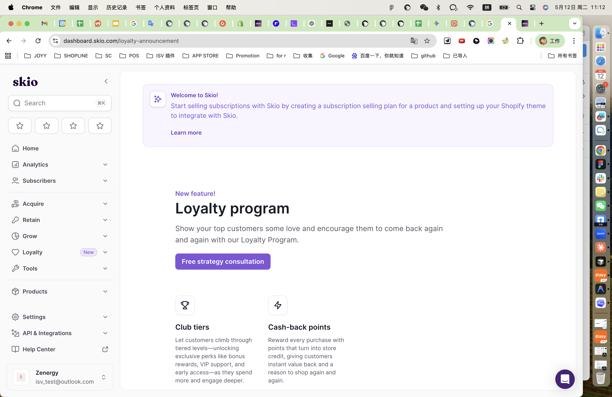
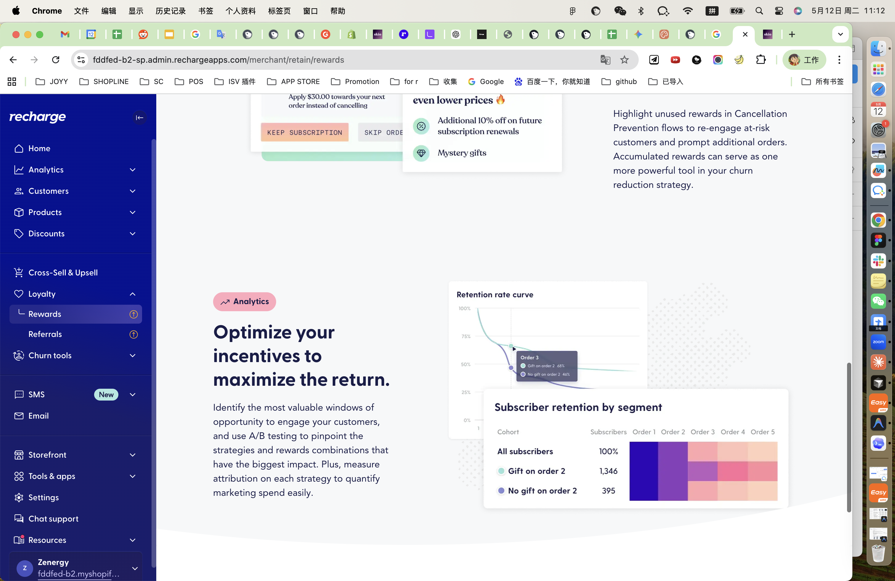
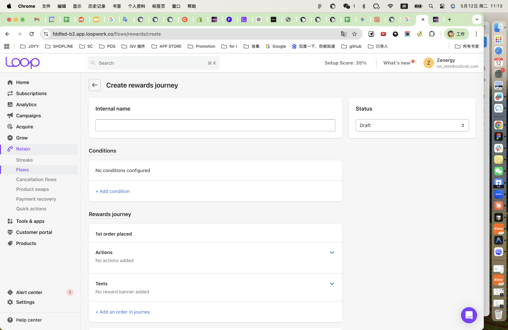

1. 定位与用户
先看三者“为谁而做、解决什么问题”。这一步最能看出产品的底层策略。
| 维度 | SKIO | Recharge | Loop |
|---|---|---|---|
| 产品定位 | 订阅品牌的完整 Loyalty Program | 订阅留存和取消挽回工具上的奖励增强 | 以 Flow 为载体的奖励旅程编排 |
| 目标用户 | 会员增长、CRM、运营团队 | 留存、反流失、CX 团队 | 增长、自动化、Retention Ops |
| 核心价值 | 让用户持续积累身份和权益，形成复购动机 | 在取消、续费、风险节点给出即时激励，减少流失 | 把奖励做成可编排、可叠加的运营流程 |
| 商业目标 | 提升 LTV、复购和会员黏性 | 降低 churn、提升续订率和挽回率 | 提升订阅生命周期内的参与度和留存 |
2. 核心策略
奖励的形式、触发方式、运营逻辑和数据闭环，直接决定它是“展示型功能”还是“经营型功能”。
SKIO
TiersCreditsRewards Page
- 以 Tier / Credit / Reward 构建长期会员体系。
- 客户在 Portal 中持续看到进度、等级和可得权益。
- 更强调“奖励作为资产”的感觉，而不是即时刺激。
- 分析层面更重视 Loyalty Analytics 和 Tier 表现。
Recharge
Punch cardFree giftCancellation prevention
- 奖励常嵌入取消防流失、续费和 streak 场景。
- 更适合“关键节点给强激励”，促成即时转化。
- 可结合优惠、礼物和预览式奖励提醒。
- 分析导向很强，目标是把奖励变成留存抓手。
Loop
FlowBannerMystery reward
- 以 Journey 组织奖励，支持条件、动作、通知、banner。
- 适合按订单数、订阅状态、客户属性做分段激励。
- 奖励配置更像“工作流编排”，可扩展性强。
- 对运营团队很强，但上手复杂度更高。
3. 用户体验
重点看“发现、使用、分享”三个旅程。Reward 不是单个页面，而是一整段体验链路。
| 旅程 | SKIO | Recharge | Loop |
|---|---|---|---|
| 发现 | Rewards page 自动出现在 Customer Portal，偏自然发现 | 在奖励模块和取消流程中发现，偏关键时刻触达 | 在 Retain > Flows 中创建，偏后台主动搭建 |
| 使用 | 看等级、积分、进度和权益；理解“我现在拥有什么” | 看优惠、礼物预告、取消挽回提示；理解“现在留下更值” | 运营定义条件和奖励；顾客在 Portal/Banner 中看进度 |
| 分享 | 偏账户内权益，不强调分享传播 | 可结合 Referral，具备更强传播属性 | 主要是个体旅程，不以社交传播为主 |
| 体验印象 | 像会员中心，强调长期资产感 | 像挽留场景，强调即时收益感 | 像运营控制台，强调编排和可控性 |
4. 优劣评估
看优势也要看代价，尤其要推演它们为什么会这样设计。
SKIO
- 优势：体系完整，Reward 与 Loyalty 强绑定，品牌感和长期价值感强。
- 劣势：偏体系型，动态旅程和实时激励不一定最强。
- 原因：产品定位本来就是 loyalty foundation，而不是单点 churn rescue。
Recharge
- 优势：奖励嵌入高风险节点，ROI 直观，留存导向清晰。
- 劣势：品牌感和会员感较弱，功能可能碎片化。
- 原因：它从订阅留存出发，奖励只是增强模块，不是唯一主轴。
Loop
- 优势：旅程编排能力强，适合复杂玩法和精细化运营。
- 劣势：配置复杂，上手门槛较高，容易运营过载。
- 原因：这是 flow-first 产品，天然偏专业运营工具。
共性风险
- 奖励术语不统一，用户理解成本会升高。
- 如果缺少分析闭环，Reward 容易变成“看起来很热闹”。
- 运营能力太强但没有模板，会让后台复杂到难以规模化。
截图与页面证据
下面是三家竞品当前页面的实际截图，可用于汇报时直观说明信息架构和页面层级。

你可以看到它用“Loyalty program”作为大标题，先讲长期会员价值，再往下拆成 Club tiers 和 Cash-back points。

页面强调奖励如何嵌入 Cancellation Prevention 和 churn 逻辑，强烈偏向留存/挽回语境。

页面是典型流程编排界面，包含 Internal name、Conditions、Rewards journey 和 Actions。
对我们的启发与具体建议
建议不是“学功能”，而是“学结构”。把 Reward 做成分层系统，才能兼顾长期价值和短期转化。
建议 1：三层结构
- 长期 Loyalty：等级、积分、权益。
- 关键节点 Incentive：取消、续费、生日、周年、首单/第 N 单。
- Journey Automation：条件、动作、通知、banner、优先级。
建议 2：用户可见性
- 明确显示我有什么、还差什么、何时生效。
- 把奖励进度做成可见资产，而不是隐藏在后台规则里。
- 在顾客端提供统一的 Reward Taxonomy。
建议 3：运营可控性
- 提供模板，降低配置门槛。
- 支持优先级、叠加规则、有效期、使用状态。
- 必须接入数据闭环：触达、领取、使用、复购、挽回。